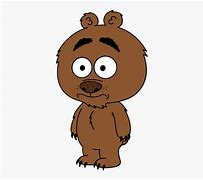

RIGBY

Malloy é um pequeno e sarcástico filhote de urso-pardo na série animada Brickleberry.
Extremamente inteligente e malicioso, ele vive no parque Brickleberry e tem uma relação
próxima com o guarda-chefe Woody Johnson. Diferente da aparência fofa que sugere,
Malloy é rude, arrogante e muitas vezes cruel, zombando dos outros personagens e
fazendo comentários politicamente incorretos. Apesar disso, ele também tem momentos
de vulnerabilidade e um senso de humor afiado que o torna um dos personagens mais
memoráveis da série.
VOLTAR